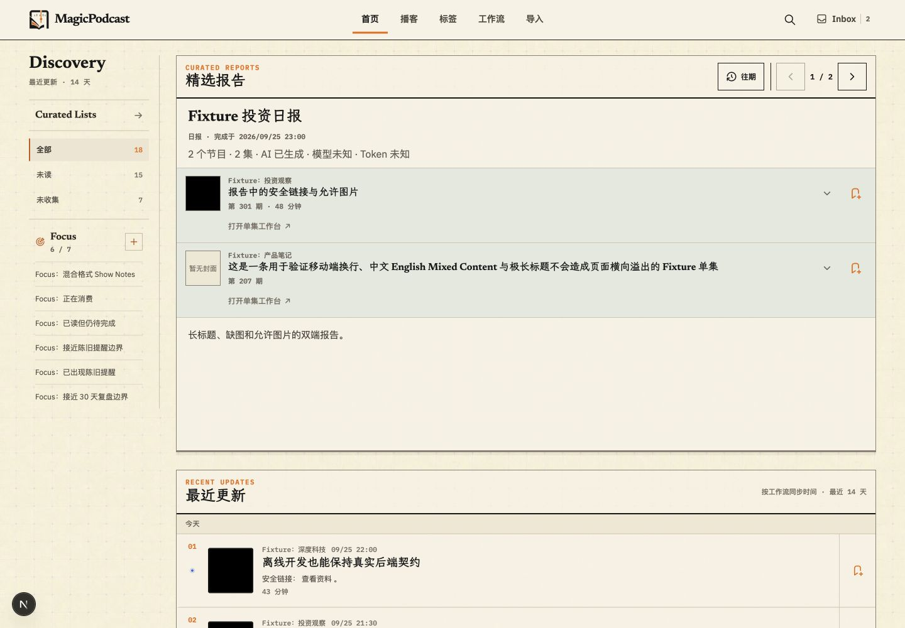
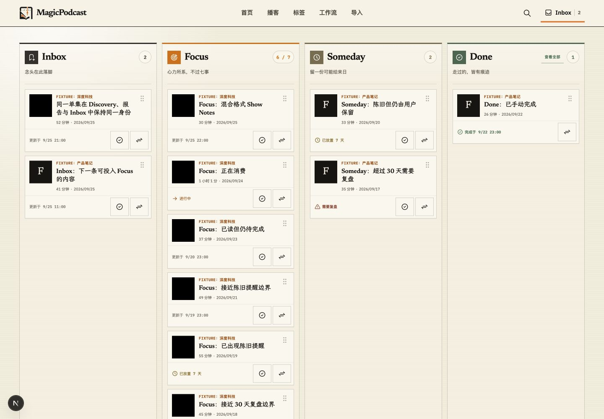
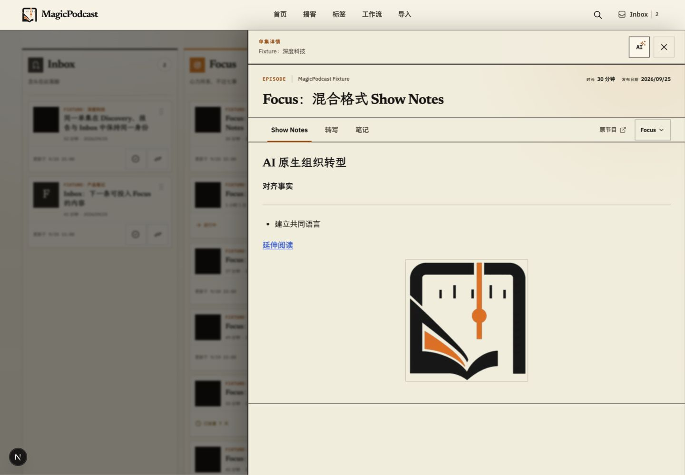
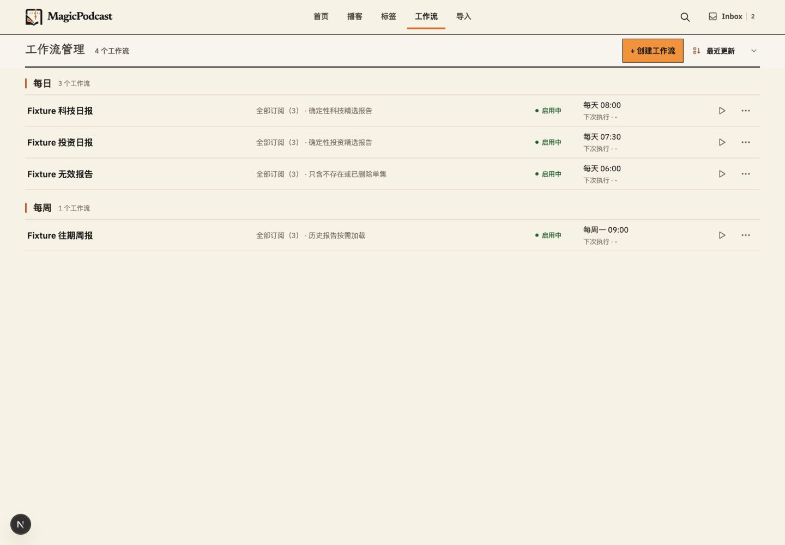
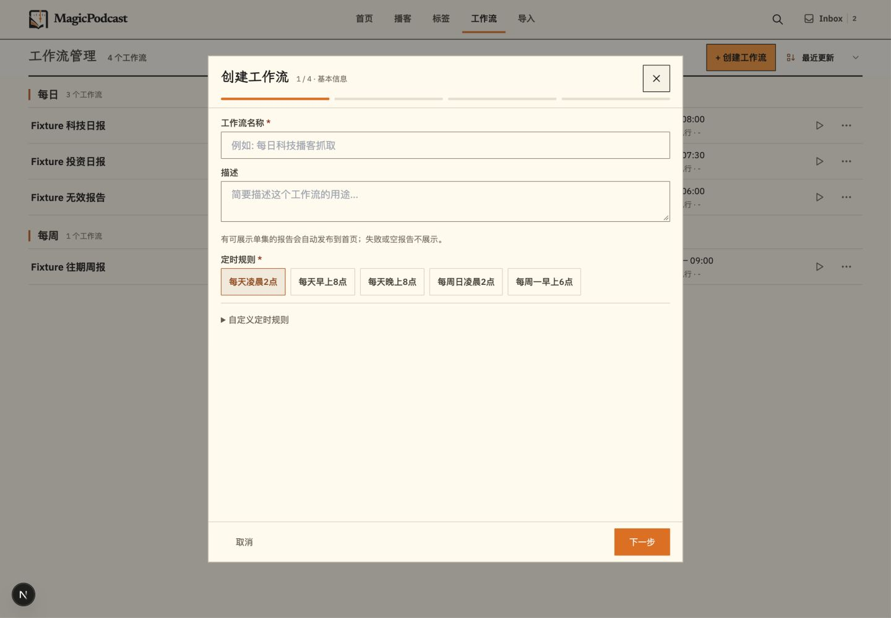
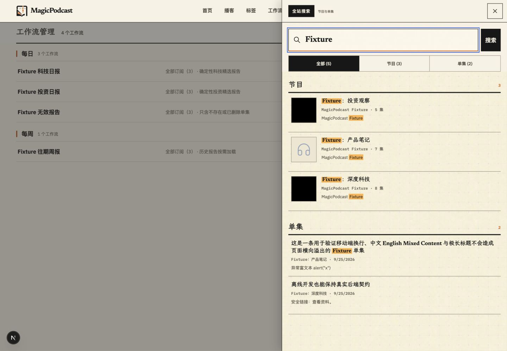
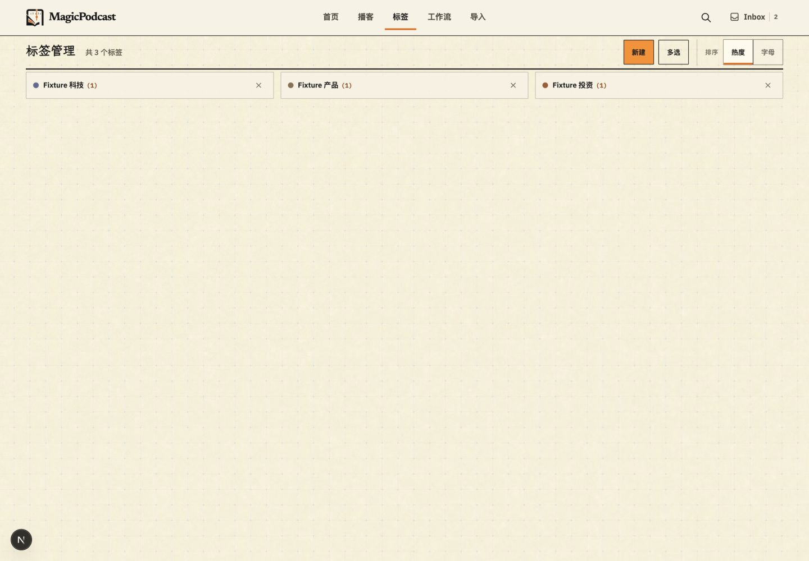
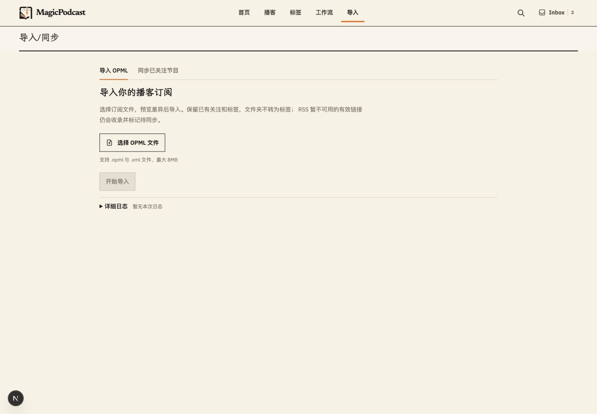
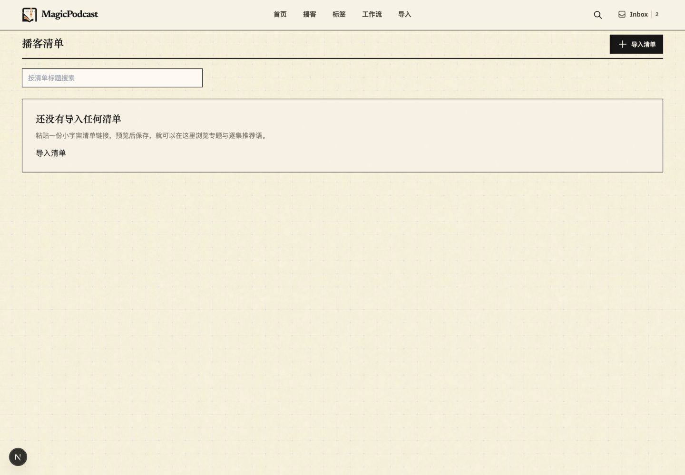

MagicPodcast
前端视觉与交互一致性专项
2026-09-25 · 本地 Fixture 实机审查与首批修复 · 基线 main@509c291
保留并精修纸感风格标题统一进入工作台手机单栏队列
结论：当前问题主要来自过时规范、页面各自扩展的样式和同一对象的入口含义漂移。首批修复聚焦这些明确差异；全站长流程、深色模式和生产状态尚未验收。
手机行动工作台
顶部可直接选择队列，当前数量始终可见；每栏保留滚动位置，关闭详情后回到原条目。去除隐藏顶部导航残留的 64px 占位。
修改前：横向四栏只露出一栏修改后：顶部切换、单栏 Focus，当前 6 项 单集卡片
标题进入站内工作台；阅读简介为次要操作，外部原节目有明确名称。音频、视频与外链恢复流程保留。
公共弹窗
降低阴影与背景干扰，收紧内容间距；取消和主动作靠右，保持 8px 间距与 44px 点击目标。
跨页面入口与键盘
精选报告标题也进入工作台，箭头独立展开简介。搜索的 Tab／Shift+Tab 在弹层中循环，Escape 后恢复原入口和页面滚动。独立搜索页仍按普通页面使用。
验证边界
自动化：1213 项全量前端测试通过；最终入口补充后，报告 52 项、搜索与 Inbox 63 项定向回归通过。TypeScript、ESLint 与构建的最终结果见专项记录。
实机：1440px、390px、320px；767／768px 断点无页面横向溢出。Focus → Someday → Focus 的滚动位置均为 266.5px，详情关闭恢复触发条目。清单弹窗 320px 时输入框及三个按钮均为 44px。
使用独立 Fixture journey、schema 36；封面黑块和占位图来自测试素材。不代表真实内容、生产发布或完整无障碍合规。仅展开页面、弹层和导航，未执行真实导入、同步、加工。
展开全部 16 个首轮审查步骤与截图

01 首页 · 桌面 · 结构清楚；纹理、分隔较强，规范与现实风格冲突。
02 行动工作台 · 桌面 · 四栏适合比较；现有完成、移动与拖放模式保留。
03 单集工作台 · 桌面 · 详情关闭、菜单 Escape 已可用；未验收外部加工。04 单集工作台 · 手机 · 内容与操作可达；阅读页签保持现有结构。05 行动工作台 · 手机 · 只能看见一栏和下一栏边缘，切换入口不明确；顶部有无效占位。06 首页 · 手机 · 精选报告默认折叠，最近更新优先；保留现有任务顺序。07 播客列表 · 手机 · 内容可读；没有将少量测试数据造成的空白视为缺陷。08 节目详情 · 手机 · 标题、简介、管理区域可用；继续保留分钟级更新时间。09 单集卡片 · 手机 · 标题去站外，旁边还有工作台、阅读简介、查看详情，目的地不易区分。
10 工作流列表 · 已有紧凑列表，作为管理页面密度参考。
11 工作流创建第一步 · 固定高度让后续步骤不跳动；本轮未覆盖完整创建过程。
12 搜索结果与键盘 · Shift+Tab 从关闭按钮越出弹层，会意外关闭搜索；已复现。
13 标签管理 · 功能入口清楚；与工作流的背景纹理存在差异。
14 导入首页 · 初始说明和日志入口清楚；本轮未运行实际导入。
15 清单空态 · 导入按钮黑色，与其他管理页橙色主操作不同。16 清单导入弹窗 · 强硬阴影、较大间距，底部按钮贴左且无间隔。后续覆盖
下一批沿真实长流程检查转写／人物／助手、工作流创建与报告、导入运行与重试；再收敛命名、日期格式、对比度与深色模式。该清单是覆盖缺口，不是已完成声明。